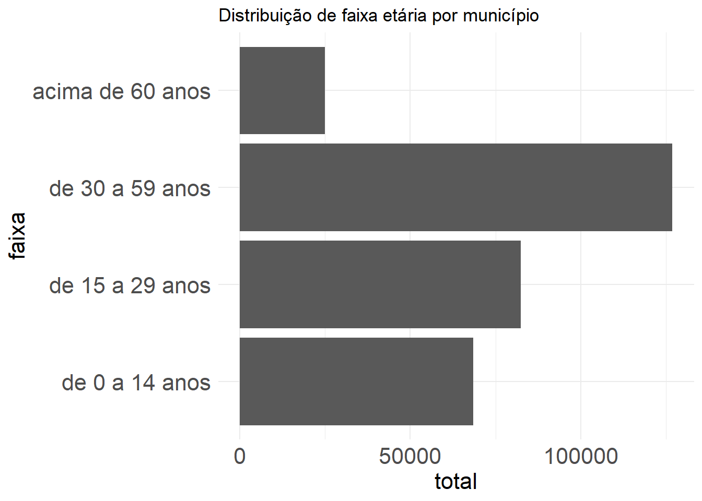

options(scipen = 999)
library(readxl)
library(tidyverse)
library(DT)
library(RODBC)Saúde Bucal - material suplementar
Procedimentos metodológicos
A construção do modelo de PDFT para saúde bucal baseado em necessidades foi elaborado a partir das orientações de Asamani et al. (2021) que sugerem algumas etapas, que serão descritas com maior detalhamento a seguir:
- Definição de escopo da metodologia em termos de cobertura jurisdicional, objetivos e horizonte temporal;
- Análise da necessidade de saúde bucal com base em aspectos da demografia, epidemiologia e serviços destinados da população a local;
- Tradução do número de serviços em número de profissionais necessários;
- Exploração das implicações em termos de recursos, como a oferta atual de profissionais e custos;
- Análise de sensibilidade para simulação de parâmetros de incerteza;
- Validação de modelo por meio de consulta a stakeholders.
Preparando ambiente do R
Carregando os pacotes necessários para o R.
1. Definição de escopo
A metodologia tem como escopo estimar a força de trabalho de cirurgiões dentistas e equipe auxiliar atual e necessária para atuação em municípios brasileiros, a nível de atenção primária, em procedimentos de natureza individual e coletiva, bem como três três procedimentos de natureza especializada: endodontia, prótese e periodontia.
2. Análise das necessidades de saúde bucal
A análise da necessidade de saúde bucal (NSB) foi construída a partir de três elementos: distribuição da população por faixa etária (P), prevalência de condições de saúde bucal (H) e procedimentos per capita (S).

Onde:
- NSB = Necessidade de saúde bucal contabilizada pelo número de serviços do tipo t destinados ao atendimento de população de faixa etária i e localidade l;
- P = População por faixa-etária i de uma localidade l;
- H = Prevalência de condições de saúde bucal que levam à necessidade de procedimentos do tipo t por faixa-etária i e dentro de uma localidade l;
- S = Procedimentos per capita do tipo t, para cada faixa-etária i e dentro de uma localidade l.
2.1. Levantando a faixa etária (P)
A distribuição por faixa etária foi construída com base em dados do último censo (2022) e estão disponíveis na página do IBGE.
Para fins de exemplificação, vamos trabalhar apenas com um município como referência: Palmas (TO). Depois escalamos os resultados para o Brasil todo.
pop_tocantins <- read_excel("C:/Users/alefs/OneDrive/Documentos/saude_bucal/01_dados/pop_tocantins.xlsx")
pop_palmas <- pop_tocantins |>
filter(ibge == "1721000") |>
select(ibge, Município, de_0_a_14_anos,
de_15_a_29_anos, de_30_a_59_anos,
acima_de_60_anos) |>
gather(key = "faixa",
value = "total",
3:6) |>
mutate(faixa = gsub("_"," ",faixa)) |>
mutate(ibge = as.character(ibge)) |>
mutate(ibge = substr(ibge, 1, 6)) |>
mutate(id_faixa = case_when(faixa == "de 0 a 14 anos" ~ 1,
faixa == "de 15 a 29 anos" ~ 2,
faixa == "de 30 a 59 anos" ~ 3,
faixa == "acima de 60 anos" ~ 4))Plotando a informação de faixa etária. Nota-se que a faixa etária de 30 a 59 anos possui maior frequência em relação às demais.
ordem <- c("de 0 a 14 anos",
"de 15 a 29 anos",
"de 30 a 59 anos",
"acima de 60 anos")
pop_palmas$faixa <- factor(pop_palmas$faixa, levels = ordem)
pop_palmas |>
ggplot(aes(x = faixa, y = total)) + geom_col() +
theme_minimal() + coord_flip() +
theme(axis.title.x = element_text(size = 16),
axis.title.y = element_text(size = 16),
axis.text = element_text(size = 16)) +
ggtitle("Distribuição de faixa etária por município")
Cabe mencionar que o censo possui outras divisões de faixa etárias. No entanto, utilizamos estas para padronizar com os dados do parâmetro H, calculado a partir da pesquisa de SB 2010 (próximo tópico).
2.2. Prevalência de condições de saúde bucal (H)
O Ministério da Saúde - por meio do material Parâmetros Assistenciais para Programação Ambulatorial e Hospitalar no âmbito do SUS (Brasil, 2021), regulamentado pela portaria de consolidação nº1 de 2017 - traz uma série de parâmetros acerca da saúde bucal.
Um dos parâmetros é a cobertura de serviços de saúde. A cobertura foi calculada a partir da pesquisa SB 2010 para cada faixa etária e tipo de procedimento conforme a lógica da tabela baixo.
| Área | Expressões usadas para cálculo de cobertura |
|---|---|
| Atenção básica | NT_1 (Número de dentes necessitando de restauração de 1 superfície) + NT_2 (Número de dentes necessitando de restauração de 2 ou mais superfícies) + NT_6 (Número de dentes necessitando de extração) + NT_7 (Número de dentes necessitando de controle de lesão branca) + NT_8 (Número de dentes necessitando de selante) + P_CALC (Prevalência de cálculo) + P_BR (Prevalência de bolsa rasa). Foi então criada a variável COB_AB. Se COB_AB = 0 o indivíduo não necessita de procedimentos de atenção básica, se COB_AB =1 ele necessita. A cobertura de atenção básica foi então estimada pelo percentual de pessoas com COB_AB=1 |
| Endodontia | A cobertura de endodontia foi calculada a partir da variável NT_5 (Número de dentes necessitando de tratamento pulpar + restauração). Foi criada a variável ENDO onde ENDO=0 se NT_5=0 e ENDO=1 se NT_5≠0. Desta forma, a cobertura de endodontia foi então estimada pelo percentual de pessoas com ENDO=1 |
| Periodontia especializada | A cobertura de periodontia especializada foi estimada pelo percentual de pessoas com a variável P_BP (Prevalência de bolsa profunda) = 1 |
| Prótese | A cobertura de prótese foi calculada pelo percentual de pessoas com a variável NECPROT (Necessidade geral de prótese) ≠ 0 |
Com base nos valores de cobertura, é possível então calcular qual a cobertura para cada tipo de procedimento e cada faixa etária.
Vamos fazer a leitura dos dados e filtrar para Palmas-TO.
Cabe destacar que, devido à estrutura da SB2010, estes parâmetros foram calculados para capitais de cada estado ou interior da região.
# Lendo dados
cobertura_sb <-read_excel("~/saude_bucal/01_dados/cobertura sb.xlsx") |>
mutate(ibge = substr(ibge, 1, 6))
# apresentando dados em formato de tabela interativa
cobertura_sb |>
filter(municipio == "Palmas") |>
select(-li_cobertura, -ls_cobertura) |>
datatable()Considerando os dados de população e de cobertura, temos os seguintes resultados para o parâmetro (H):
pop_coberta <-
pop_palmas |>
left_join(cobertura_sb, by = c("ibge",
"id_faixa")) |>
select(ibge, municipio, faixa, id_faixa,
total, procedimento, cobertura) |>
mutate(populacao_coberta = cobertura * total) |>
mutate(populacao_coberta = round(populacao_coberta, 2))
pop_coberta |>
select(ibge, municipio, faixa,
total, procedimento, cobertura,
populacao_coberta) |>
datatable()2.3. Parâmetros normativos de procedimentos per capita (S)
Os cálculos de necessidade normativa por procedimento per capita (S) foram estimados também no caderno de parâmetros de acordo com o quadro a seguir.
| Área | Procedimentos |
|---|---|
| Atenção básica | No banco de dados do projeto SB BRASIL 2010 foram transformados os códigos 0 (hígido), A (não examinado) e X (excluído) das variáveis CPI17, CPI11, CPI 27, CPI37, CPI31 e CPI47 em 0 e em 1 para as variáveis que tivessem o código 2 (cálculo) e 3 (bolsa rasa). Ao final essas variáveis foram somadas e a variável NECPERIO_AB criada para armazenar esta soma. Foram somados os valores referentes as variáveis NT_1, NT_2, NT_6, NT_7 e NT_8 formando a variável NEC_AB. Finalmente foram somadas NECPERIO_AB e NEC_AB para se obter a variável NEC_AB_TOTAL. Foi então obtida a média da variável NEC_AB_TOTAL estratificada por idade e domínios geográficos (capitais e interior). |
| Endodontia | Foi obtida a média da variável NT_5 (Número de dentes necessitando de tratamento pulpar + restauração) estratificada por idade e domínios geográficos (capitais e interior). |
| Periodontia | No banco de dados do projeto SB BRASIL 2010 foram transformados os códigos 0 (hígido), A (não examinado) e X (excluído) das variáveis CPI17, CPI11, CPI 27, CPI37, CPI31 e CPI47 em 0 e em 1 para as variáveis que tivessem o código 4 (bolsa profunda). Ao final essas variáveis foram somadas e a variável NECPERIO_ESPEC criada para armazenar esta soma. Foi então obtida a média da variável NECPERIO_ESPEC estratificada por idade e domínios geográficos (capitais e interior). Para as idades de 5 e 12 anos esta variável não foi mensurada no projeto SB BRASIL 2010, portanto não há dados de necessidade normativa para a faixa de 0 a 14 anos. |
| Prótese | A variável NECPROT foi transformada em NUMPROT (número de próteses) como explicitado a seguir:
Foi então obtida a média da variável NUMPROT estratificada por idade e domínios geográficos (capitais e interior). Para as idades de 5 e 12 anos esta variável não foi mensurada no projeto SB BRASIL 2010, portanto não há dados de necessidade normativa para a faixa de 0 a 14 anos. |
producao_normativa <-
read_excel("~/saude_bucal/01_dados/cobertura sb.xlsx",
sheet = "Produção normativa", col_types = c("text",
"text", "text", "text", "numeric",
"numeric", "numeric", "numeric")) |>
mutate(ibge = substr(ibge, 1, 6))
producao_palmas <- producao_normativa |>
filter(ibge == "172100") |>
select(-municipio, -li_cobertura,
-ls_cobertura,-faixa_etaria)
necessidades_servicos <- pop_coberta |>
left_join(producao_palmas,
by = c("ibge","id_faixa","procedimento")) |>
mutate(nec_servicos = populacao_coberta * producao_pc) |>
mutate(nec_servicos = round(nec_servicos, 2))3. Tradução do número de serviços em número de profissionais necessários
A etapa 3 consiste na tradução do número de serviços, calculado pela equação 1, em número de profissionais necessários (NPSB). Para isso, devem ser considerados dois elementos: produtividade (T) e o tempo total disponível (TTD).

Onde:
- NPSB = Necessidade de profissionais de saúde bucal;
- NSB = Necessidade de saúde bucal contabilizada pelo número de serviços do tipo t destinados ao atendimento de população de faixa etária i e localidade l;
- T = Tempo médio de serviços do tipo t;
- TTD = Tempo total disponível de um profissional ao longo de um ano.
Vamos utilizar como tempo médio de consulta (T) o valor de 25 minutos. Esse valor foi baseado em um levantamento utilizando técnicas de time-motion realizado para aferir o tempo médio de procedimentos executados pela equipe de saúde bucal, em unidades básicas de saúde em São Paulo, Brasil (Bellotti et al, 2024).
O tempo total disponível (TTD) corresponde ao tempo de um profissional deduzidas ausências programáticas (ex.: férias, feriados) e não programáticos (ex.: licenças para tratamento de saúde). Vamos utilizar como referência o TTD estimado em 1776 horas anuais do estudo de Bonfim et al. (2016), direcionados para enfermeiros. Infelizmente, não conseguimos localizar estudos que já tenham levatado um TTD para cirurgiões dentistas no Brasil ou fora.
necessidades_prof <- necessidades_servicos |>
mutate(nec_prof =
(nec_servicos * 25/60)/1776) |>
mutate(nivel = if_else(procedimento == "Atenção Básica","APS","AES")) |>
group_by(ibge, municipio, nivel) |>
summarise(necessidade = sum(nec_prof))
DT::datatable(necessidades_prof) 4. Exploração das implicações em termos de recursos, como a oferta atual de profissionais e custos
O próximo passo consiste em algumas etapas, sendo elas:
- Obtenção da oferta de profissionais;
- Cálculo de valor líquido da oferta;
- Comparação da oferta com necessidades;
4.1. Obtenção da oferta de profissionais
Para acessar a oferta de profissionais, foi necessário realizar uma consulta no Cadastro Nacional de Estabelecimentos de Saúde - tabela Profissionais (CNES-PF). Como profissionais podem ter múltiplos vínculos, padronizou-se a contagem por meio do Full-time equivalent (FTE), tomando como referência a carga horária de contrato.
# codigo para acessar dados de um datalake
dremio_host <- Sys.getenv("endereco")
dremio_port <- Sys.getenv("port")
dremio_uid <- Sys.getenv("uid")
dremio_pwd <- Sys.getenv("datalake")
channel <- odbcDriverConnect(sprintf("DRIVER=Dremio Connector;
HOST=%s;
PORT=%s;
UID=%s;
PWD=%s;
AUTHENTICATIONTYPE=Basic Authentication;
CONNECTIONTYPE=Direct",
dremio_host,
dremio_port,
dremio_uid,
dremio_pwd))
query <- 'SELECT * FROM "Analytics Layer".Infraestrutura.Profissionais."TSB/ASB e cirurgiões dentistas em APS e AES"'
oferta <- sqlQuery(channel, query,
as.is = TRUE) O script abaixo descreve a consulta realizada por meio de SQL. Foram acessados dados de todos os municípios para a COMPETEN (mês e ano) de janeiro de 2024. Foram acessados dados de Cirurgiões dentistas e Técnicos/Auxiliares de Saúde Bucal. Não houve restrição quanto ao vínculo - SUS ou não SUS. Em uma primeira simulação são feitas análises apenas com um recorte de profissionais SUS.
Foram acessados dados dos seguintes tipos de unidade:
- Atenção Primária à Saúde (APS)
- 01 - Posto de saúde
- 02 - Centro de Saúde/Unidade Básica
- 32 - Unidade Móvel Fluvial
- 40 - Unidade Móvel Terrestre
- Atenção Especializada à Saúde (AES)
- 36 - Clínica/Centro de Especialidade
- 73 - Pronto atendimento
- 04 - Policlínica
- 22 - Consultório Isolado
Não foi incluída a força de trabalho atuante em hospitais, tendo em vista o escopo da metodologia.
WITH CH_PROFISSIONAIS AS(
SELECT CODUFMUN,
COMPETEN,
PROF_SUS,
NIVEL,
CATEGORIA,
HORAAMBULATORIAL,
HORAHOSPITALAR,
HORAOUTRO,
HORAAMBULATORIAL + HORAHOSPITALAR + HORAOUTRO AS HORA
FROM(
SELECT CODUFMUN,
COMPETEN,
PROF_SUS,
CASE
WHEN TP_UNID = '01' OR
TP_UNID = '02' OR
TP_UNID = '32' OR
TP_UNID = '40' THEN 'APS'
WHEN TP_UNID = '36' OR
TP_UNID = '73' OR
TP_UNID = '04' OR
TP_UNID = '22' THEN 'ESPECIALIZADO'
END NIVEL,
CASE
WHEN substr(CBO, 1, 4) = '2232' THEN 'Cirurgião-dentista'
WHEN substr(CBO, 1, 4) = '3224' THEN 'Técnico ou Auxiliar de Saúde Bucal'
END CATEGORIA,
SUM(HORA_AMB) AS HORAAMBULATORIAL,
SUM(HORAHOSP) AS HORAHOSPITALAR,
SUM(HORAOUTR) AS HORAOUTRO
FROM Dados.cnes.PF
WHERE (substr(CBO, 1, 4) = '2232' OR
substr(CBO, 1, 4) = '3224') AND
COMPETEN = '202401'
GROUP BY CODUFMUN, COMPETEN, NIVEL, PROF_SUS, CBO
)
)
SELECT p.CODUFMUN,
q.municipio,
q.uf_sigla,
q.latitude,
q.longitude,
q.cod_regsaud,
q.cod_macrorregiao,
q.regiao_saude,
q.macrorregiao_pad,
p.COMPETEN,
p.PROF_SUS,
p.NIVEL,
p.CATEGORIA,
p.HORA,
p.HORA/40 AS FTE40
FROM CH_PROFISSIONAIS p
LEFT JOIN
"Analytics Layer".Territorial."Municípios - Hierarquia Completa" q
ON CAST(P.CODUFMUN AS INTEGER) = q.cod_municipio Vamos filtrar apenas para acessar dados de Palmas (TO) e profissionais atuando no SUS.
oferta$FTE40 <- as.numeric(oferta$FTE40)
oferta_palmas <-
oferta |>
filter(CODUFMUN == "172100" & PROF_SUS == "1") |>
group_by(CODUFMUN, CATEGORIA, NIVEL) |>
summarise(FTE40 = sum(FTE40)) |>
filter(NIVEL != "NA") |>
mutate(NIVEL = if_else(NIVEL == "APS","APS","AES")) 4.2. Cálculo de valor líquido da oferta
O cálculo do valor líquido da oferta é feito por meio da fórmula 3:

Onde:
- O = Oferta de cirurgiões-dentistas em dada localidade l;
- E = Estoque de profissionais atuantes em estabelecimentos de saúde me dada localidade l;
- AD = Percentual da carga de trabalho dedicada a atividades diretas (%);
- FC = Percentual da carga de trabalho dedicada a um foco clínico (%)
Desta forma, o script abaixo é usado para calcular os valores líquidos.
oferta_palmas <-
oferta_palmas |>
mutate(FTE_40_direto = FTE40 * 0.80) |>
mutate(FTE_40_linha = FTE_40_direto * 0.80)
oferta_palmas# A tibble: 4 × 6
# Groups: CODUFMUN, CATEGORIA [2]
CODUFMUN CATEGORIA NIVEL FTE40 FTE_40_direto FTE_40_linha
<chr> <chr> <chr> <dbl> <dbl> <dbl>
1 172100 Cirurgião-dentista APS 99 79.2 63.4
2 172100 Cirurgião-dentista AES 33 26.4 21.1
3 172100 Técnico ou Auxiliar de Saúde … APS 78 62.4 49.9
4 172100 Técnico ou Auxiliar de Saúde … AES 16 12.8 10.24.3. Implicações de resultados
Por fim, são feitos os cálculos entre oferta e demanda. São aplicadas duas métricas:
Resultado Absoluto (RA), que é referente à diferença entre oferta e demanda, conforme equação 4;
Resultado Relativo (RR) se refere à diferença percentual entre oferta e demanda, conforme equação 5.

Onde:
- RA = Resultado absoluto;
- O = Oferta de cirurgiões-dentistas em dada localidade l;
- NPSB = Necessidades cirurgiões-dentistas em dada localidade l;

Onde:
- RR = Resultado relativo;
- O = Oferta de cirurgiões-dentistas em dada localidade l;
- NPSB = Necessidades cirurgiões-dentistas em dada localidade l;
Os cálculos são realizados conforme os seguintes scripts:
oferta_palmas_cd <- oferta_palmas |>
filter(CATEGORIA == "Cirurgião-dentista")
oferta_vs_demanda <-
necessidades_prof |>
left_join(oferta_palmas_cd,
by = c("ibge"="CODUFMUN",
"nivel" = "NIVEL")) |>
mutate(ra = FTE_40_linha - necessidade,
rr = (FTE_40_linha/necessidade) * 100) |>
mutate(ra = round(ra, 2),
rr = round(rr, 2))
oferta_vs_demanda |>
mutate(necessidade = round(necessidade, 2)) |>
mutate(FTE_40_linha = round(FTE_40_linha, 2)) |>
select(ibge, municipio,
nivel, necessidade,
FTE_40_linha, rr, ra) |>
datatable()